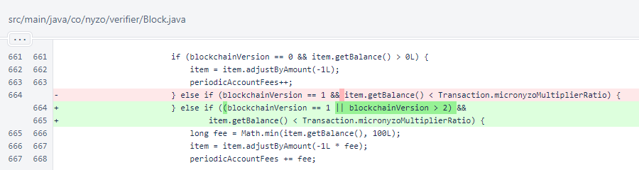

Nyzo version 580 (commit on GitHub) corrects a mistake in the fee calculation for low-balance accounts.
This version affects all run modes. The code change in this version will not affect behavior until blockchain version 3.
As part of the quality assurance process for Nyzo, a clean-room implementation of the balance-list calculations is maintained. It is independently implemented based on the balance list rules. This implementation is used to derive balance lists from blocks as they are produced by the cycle. The resulting balance lists are compared to the balance lists produced by verifiers, and an alert is raised if there is any mismatch between the two.
This system produced an alert at block 7170522.
mismatch of value for 8f35...c16f, ∩603.396824 (calculated) != ∩603.396814 (correct),
difference=(∩0.000010) at block height 7170522
mismatch of value for 96b2...cf17, ∩775.943410 (calculated) != ∩775.943400 (correct),
difference=(∩0.000010) at block height 7170522
mismatch of value for d920...cf72, ∩223.454415 (calculated) != ∩223.454405 (correct),
difference=(∩0.000010) at block height 7170522
mismatch of value for 9219...0f8d, ∩754.792597 (calculated) != ∩754.792587 (correct),
difference=(∩0.000010) at block height 7170522
mismatch of value for edc2...cda5, ∩14.807158 (calculated) != ∩14.807148 (correct),
difference=(∩0.000010) at block height 7170522
mismatch of value for 2a2c...43ea, ∩0.998367 (calculated) != ∩0.998467 (correct),
difference=∩0.000100 at block height 7170522
mismatch of value for ecdb...202b, ∩4180.615088 (calculated) != ∩4180.615078 (correct),
difference=(∩0.000010) at block height 7170522
mismatch of value for 6460...c1cc, ∩225.408759 (calculated) != ∩225.408749 (correct),
difference=(∩0.000010) at block height 7170522
mismatch of value for cc22...dcea, ∩206.207499 (calculated) != ∩206.207489 (correct),
difference=(∩0.000010) at block height 7170522
mismatch of value for 5260...6120, ∩239.487967 (calculated) != ∩239.487957 (correct),
difference=(∩0.000010) at block height 7170522
mismatch of value for 7354...2bfb, ∩1125.107038 (calculated) != ∩1125.107028 (correct),
difference=(∩0.000010) at block height 7170522
The "correct" values are the values provided by the balance list. The "calculated" values are from the alternate implementation. A single account is µ100 higher than it should be, and 10 other accounts are µ10 lower than they should be. The source of this discrepancy was easily found in the Block class.
The µ100 periodic fee that should have applied to all blockchain versions 1 and above was mistakenly applied to only blockchain version 1. This cannot be corrected for blockchain version 2, because the incorrect rule has already been used. The fix is being released now in the interest of transparency. Consensus rules regarding balance-list spam will continue to provide partial protection in this area, and reactivation of this rule in blockchain version 3 will quickly eliminate small accounts.
